SmartTools アドオン解説書
SmartRender Suite（スマートレンダー スイート） 解説書
版 1.0.0 ／ 2026年11月18日 ／ Blender 5.1.2 用
SmartRender Suite は、レンダー（画像や動画を書き出すこと）の作業をまとめて扱うアドオンです。品質の設定、保存先の確認、複数のカメラやビューレイヤーの書き出しを、順番に実行できます。合成用のパス（色・深さ・法線などを別々に書き出した画像）の準備や、設定違いの書き出し（バリアントとテイク）も、同じパネルから行えます。まずは「シーン基本設定を準備」→「出力確認」→「レンダー開始」の 3 つのボタンを覚えれば使えます。
1. このアドオンでできること
レンダーの準備・出力先の確認・まとめての書き出しを、1 つのパネルで行うアドオンです。
- 品質（「下書き」「プレビュー」「最終」）やレンダーエンジン、画像形式をまとめて設定できます。
- 実際にレンダーする前に、どのフォルダーにどんな名前で保存されるかを確認できます（「出力確認」）。
- カメラとビューレイヤーの組み合わせから、書き出しの予定表（レンダーキュー）を作り、順番に実行できます。
- カメラ・フレーム範囲・品質などの違いを「バリアントとテイク」として保存し、切り替えて書き出せます。
- 合成用のパス（Z深度・法線・Cryptomatte など）を選んで、ファイルに書き出すノードを自動で組めます（「レンダーエレメント」）。
- レンダー後に、ファイルが正しく書かれたかを確かめられます（「レンダー後に出力検証」）。
- 連番画像から動画を作る FFmpeg の命令を、書き出すスクリプトや設定ファイルに入れられます（「連番からムービー化」）。
- ネットワークレンダーやレンダーファーム向けに、設定ファイル（JSON）と実行スクリプト（.sh / .bat）を書き出せます。
- カメラ用の画像板、カメラリグ、三点照明、太陽位置など、レンダー周りの補助ツールを「その他ツール」から必要な時だけ読み込めます。
- カット（ショット）ごとに、同じ命名規則で画像を書き出したい時。
- 複数のカメラをまとめて、順番にレンダーしたい時。
- 確認用は軽い品質、提出用は高い品質と、設定を切り替えて書き出したい時。
- 合成作業のために、色以外のパスも一緒に書き出したい時。
- 書き出しの途中で止まった時に、既にあるフレームを使い回して続きから再開したい時。
ひと目で分かる例
このアドオンを使うと、画面は次のように変わります。くわしい操作は 5 章の各機能の「実例」で説明します。
実例選んだ物の周りに 3 つのライトを置く「三点照明」（スザンヌと床（カメラ付き）で試した様子）
撮影の定番の、キー（主光）・フィル（補助光）・バック（後ろからの光）の 3 灯を、選んだ物の周りに一度に置きます。ライトの向きはカメラの位置を元に決まります。カメラが無い時や、カメラが物と同じ位置や真上にある時は、物を正面（-Y 側）から見た向きで置きます。
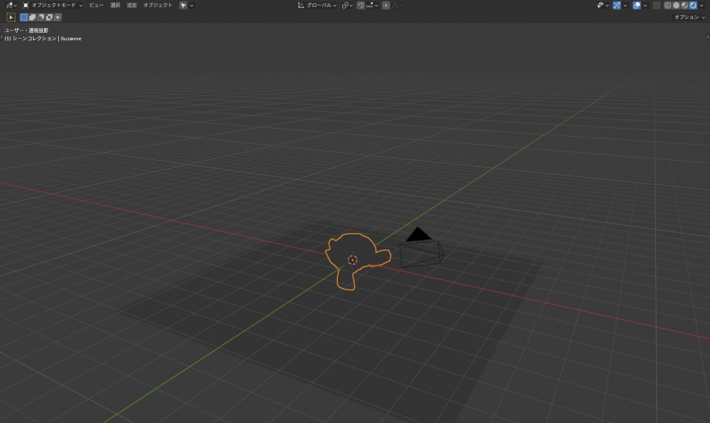
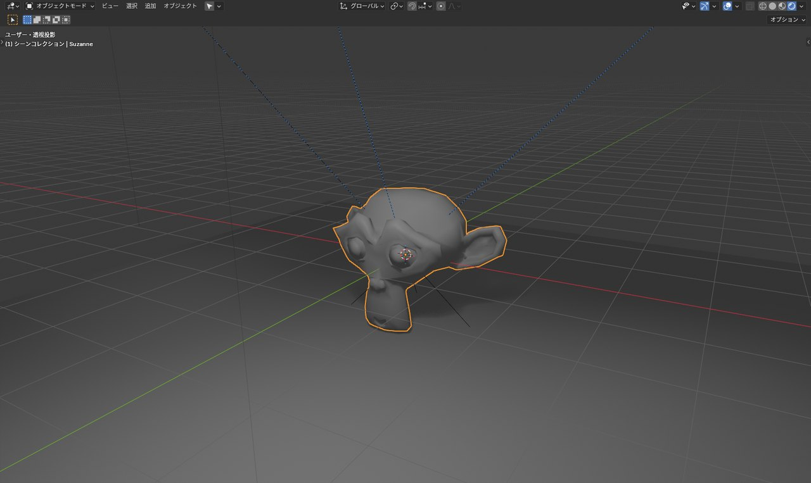
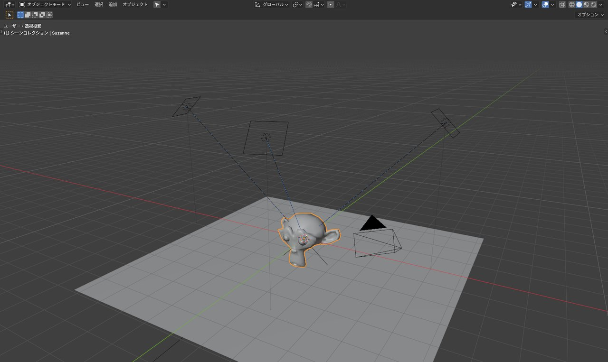
- スザンヌを選ぶ
- 「Smart Render」タブ ＞「その他ツール」で「三点照明」の行を開き、「読み込む」を押す
- 出てきた「クイックアクセス」の「三点照明を作成」を押す
見どころ：ライトが無く真っ暗だったスザンヌが、周りに置かれた 3 つのライト（キー・フィル・バック）で照らされ、形と陰影が見えるようになりました。引いた図で、3 つのライトがスザンヌを囲む位置に置かれたことが分かります。
実例「シーン基本設定を準備」で予定と診断を整える（スザンヌと床（カメラ付き）で試した様子）
「シーン基本設定を準備」は、書き出しの予定表を作り、事前の診断までまとめて行います。3D ビューの見た目は変わりません。結果は N パネルの「キュー件数」と「監査状態」に出ます。
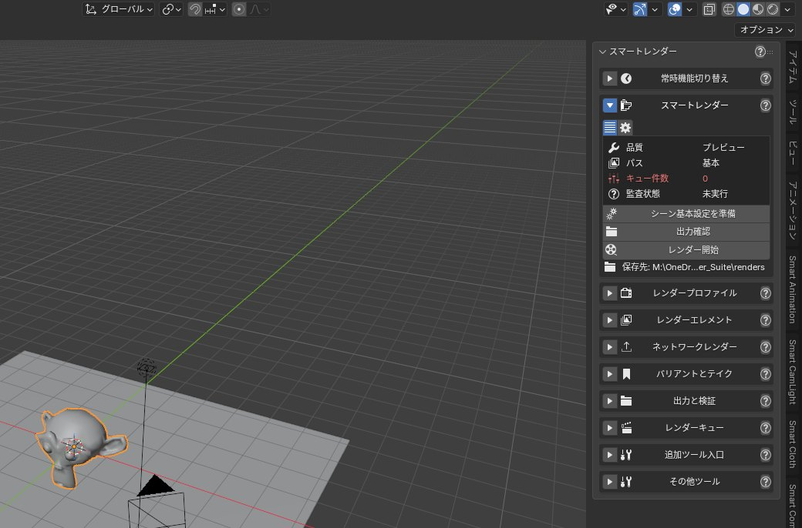
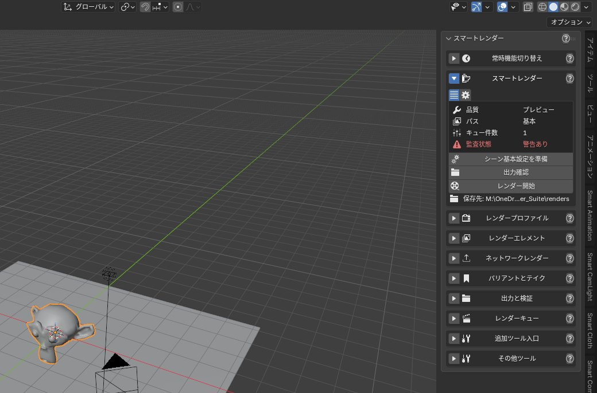
- 「Smart Render」タブ ＞「スマートレンダー」を開く
- 「シーン基本設定を準備」を押す
- 「キュー件数」と「監査状態」を見る
見どころ：「キュー件数」の 0（赤）が 1 になり、「監査状態」の「未実行」が診断の結果（この例では「警告あり」）に変わりました。警告の中身は、「スマートレンダー」の歯車のアイコン（「詳細項目を表示」）をオンにすると出る「ログ」で読めます。ここまでで「出力確認」と「レンダー開始」に進めます。
2. 目玉の機能
このアドオンならではの機能を、図に番号を付けて説明します。図の中の番号と、図の下の一覧の番号が対応しています。図を押すと大きく表示されます。設定の一つ一つは 5 章の各見出しで説明します。
2-1. 3 つのボタンで、準備から書き出しまでいちばんの売り
レンダーの書き出しは、ふつうは出力の設定・パスの組み合わせ・保存先の名前・書き出す順番を、別々の画面で整えてから始めます。「スマートレンダー」のパネルでは、「シーン基本設定を準備」「出力確認」「レンダー開始」の 3 つのボタンを上から順に押すだけで、書き出しの予定表（レンダーキュー）づくりと事前の診断、保存先の下見、書き出しまで進みます。今の状態は、パネルの上の 4 行の欄でいつでも分かります。
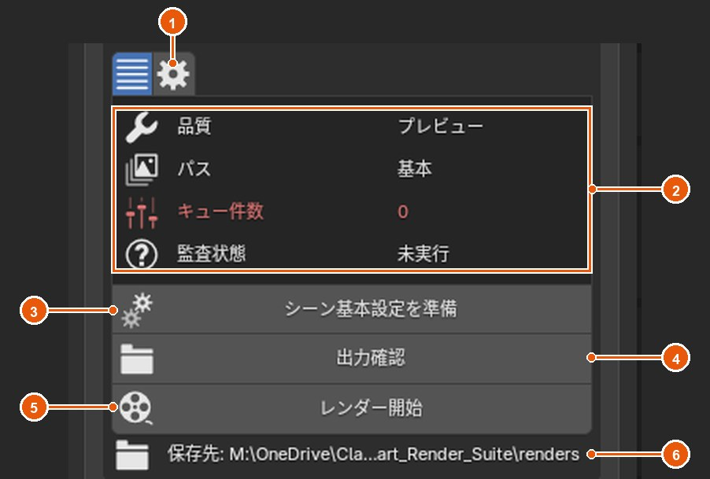
- 1詳細項目を表示（歯車）：オンにすると、「ダッシュボード」「ログ」などの上級者向けの見出しと、細かい設定が出る
- 2状態の欄：上から、品質・パス（合成用パスの組み合わせ）・キュー件数（書き出す予定の件数）・監査状態（診断の結果）。件数が 0 の時と、診断で警告・エラーがある時は赤くなる
- 3シーン基本設定を準備：壊れやすい設定の整理・レンダープロファイルの適用・レンダーキューの作り直し・事前の診断を、1 回でまとめて行う。3D ビューの見た目は変わらない
- 4出力確認：実際にはレンダーせずに、保存されるファイルのパスを調べて「ログ」に書く。⑨ の「選択行の出力例」にも出る
- 5レンダー開始：レンダーキューの有効な行を、上から順に書き出す。保存先の名前が重なる時は、別名を付けて逃がす
- 6保存先：書き出しの親フォルダー。長いパスは途中が省かれる
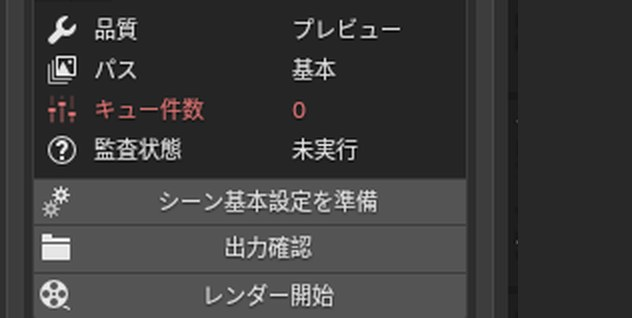
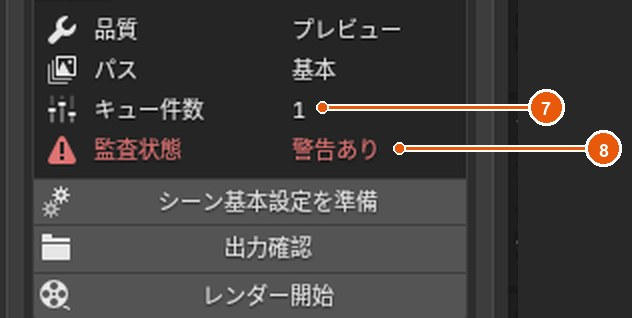
- 7キュー件数：0（赤）が 1 になった。書き出しの予定表が作られた
- 8監査状態：「未実行」が診断の結果（この例では赤い「警告あり」）に変わった。警告の中身は、① をオンにすると出る「ログ」で読める
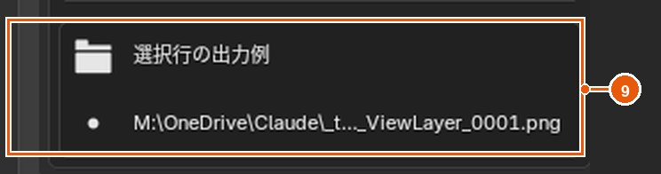
- 9選択行の出力例：④「出力確認」を押すと、選んでいる行の保存先とファイル名がここに出る。書き出す前に名前を確かめられる
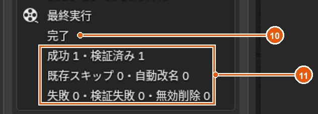
- 10最終実行：書き出しの結果。「—」が「完了」に変わった
- 11件数：この例では 1 枚を書き出し、「成功」が 1。失敗か検証失敗があると、この欄が赤くなる
- サイドバー（N パネル）の「Smart Render」タブで「スマートレンダー」を開く。
- ③「シーン基本設定を準備」を押し、② の「キュー件数」と「監査状態」を見る。
- ④「出力確認」を押し、⑨「選択行の出力例」で保存先とファイル名を確かめる。
- 問題がなければ ⑤「レンダー開始」を押す。
- 「監査状態」が赤い時は、① の歯車をオンにして「ログ」で警告の中身を読む。
- ④「出力確認」はレンダーしないので、時間をかけずに保存先とファイル名だけを先に確かめられる。
- 件数は、シーンや設定が変わると少し後に自動で数え直す。まだ一度も数えていない間は「—」。
2-2. パスごとの書き出しノードを、ボタンで組むノードを手で組まない
深度・法線・影などのパス（レンダーエレメント）を別々の画像で書き出すには、ふつうはコンポジットでファイル出力のノードを作り、パスを 1 本ずつつなぎます。「レンダーエレメント」では、書き出したいパスにチェックを入れて「レンダーエレメントを準備」と「ノード更新」を押すだけで、そのノードと線が作られます。よく使う組み合わせは「クイックセット」で一度に選べます。
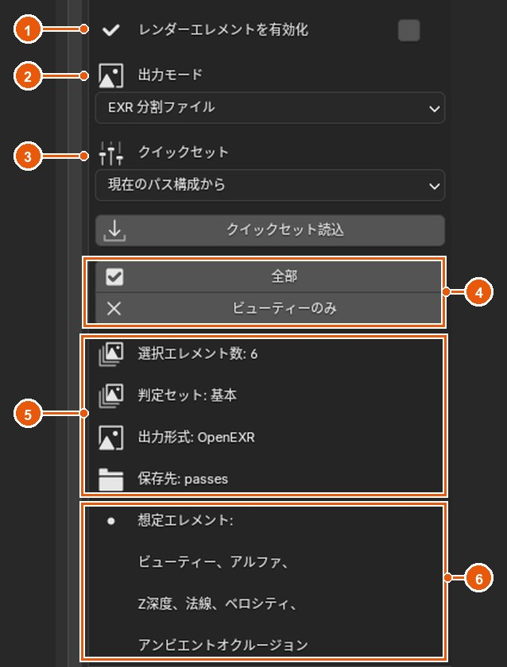
- 1レンダーエレメントを有効化：オンにすると、チェックしたパスを書き出す対象にする
- 2出力モード：「EXR 分割ファイル」（パスごとに別のファイル）か、「マルチレイヤー EXR」（ビューレイヤーごとに 1 つのファイル）
- 3クイックセット：「合成」「ルックデブ」「ライティング」「Crypto / ID」など、よく使う組み合わせを選び、「クイックセット読込」で下のチェックに入れる
- 4全部／ビューティーのみ：「全部」は全部にチェックを入れる。ボタンの「ビューティーのみ」は、普通の色の画像 1 個だけにする
- 5判定セットなど：選んでいるパスの数、実際に使われる組み合わせ（「判定セット」）、保存の形式、保存先のフォルダー
- 6想定エレメント：書き出される予定のパスの名前。下のチェックの欄と同じ名前で出る
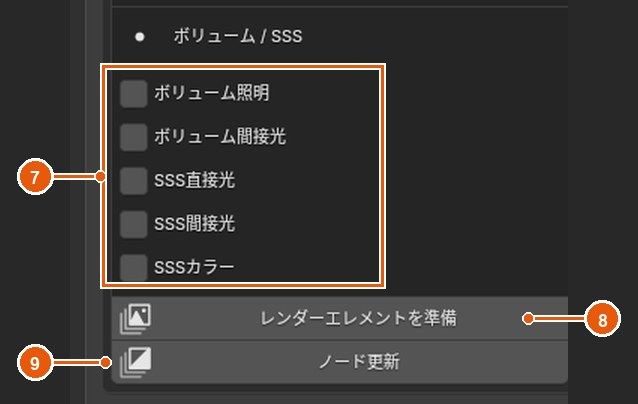
- 7パスのチェック欄：「ビューティー」「Z深度」「法線」「ベロシティ」などを種類ごとに 1 つずつオン・オフする（図はその最後の部分）
- 8レンダーエレメントを準備：必要なパスの設定と、ファイルに書き出すノード（ファイル出力ノード）をまとめて整える
- 9ノード更新：今オンのパスから、ファイル出力ノードを作り直す
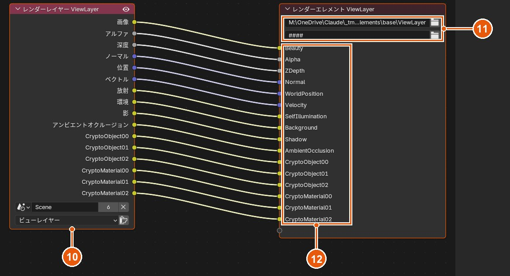
- 10レンダーレイヤーのノード：レンダーの結果。チェックしたパスの出口から、右の書き出しノードへ線が出る
- 11保存先とファイル名の型：#### の所にフレーム番号が入る
- 12入力の名前：言語に関係なく英語（Beauty、ZDepth など）。「EXR 分割ファイル」では、フレーム番号と入力の名前がファイル名になる（例：0001Beauty.exr）
- 「Smart Render」タブ ＞「レンダーエレメント」で ①「レンダーエレメントを有効化」をオンにする。
- ③「クイックセット」で組み合わせを選んで「クイックセット読込」を押す（⑦ のチェックで 1 つずつ選んでもよい）。
- ⑧「レンダーエレメントを準備」を押し、続けて ⑨「ノード更新」を押す。
- コンポジットのノードエディターで、組まれたノードを確かめる。
- ボタンの「ビューティーのみ」は 1 個、クイックセットの「ビューティーのみ」はビューティーとアルファの 2 個になる。
- チェックを変えた後に ⑨ を押し忘れても、「レンダーキューを実行」の時に今のチェックに合わせて組み直す。
- 全部のチェックを外すと、ビューティーだけを書き出す。
- 「マルチレイヤー EXR」では、ビューレイヤーの名前とフレーム番号の 1 ファイルになる（例：ViewLayer_0001.exr）。
くわしい設定：5-5. レンダーエレメント
2-3. カメラ違いなどを保存して、ボタン 1 つで切り替える親から受け継ぐ
カメラやビューレイヤーを替えて何通りも書き出す時、ふつうは毎回シーンを手で切り替えます。「バリアントとテイク」では、今の組み合わせを「新規保存」で名前を付けて残し、「適用」で呼び戻せます。親を選ぶと、決めていない項目は親から受け継ぐので、違う所だけを決めれば済みます。「レンダーキュー」の「キューソース」を「バリアントとテイク / テイク」にすると、保存した組み合わせごとに書き出せます。
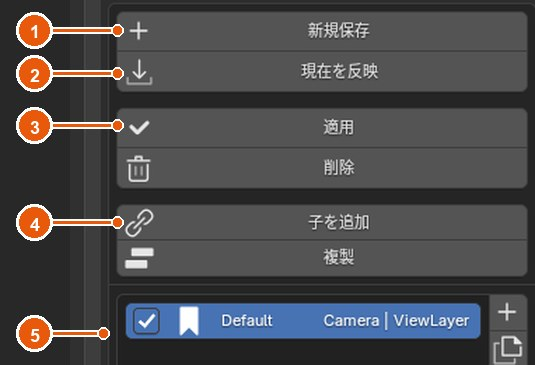
- 1新規保存：今のカメラ・ビューレイヤー・World などから、新しいバリアントとテイクを作る
- 2現在を反映：今のビューレイヤーの上書きの状態を、選んでいる物に取り込む
- 3適用：選んでいる物を、今のシーンに当てはめる
- 4子を追加：選んでいる物を親にして、子を作る（上の「削除」、下の「複製」も同じ並び）
- 5一覧：保存した物が並ぶ。最初から「Default」が 1 つ入っている
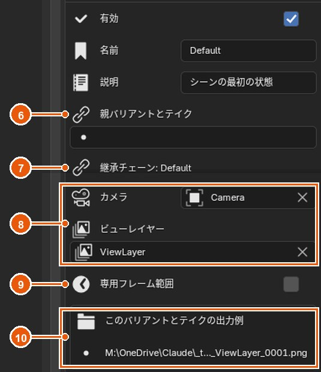
- 6親バリアントとテイク：親を選ぶと、決めていない項目は親の設定を受け継ぐ
- 7継承チェーン：受け継ぐ順番が出る
- 8カメラ／ビューレイヤー：この組み合わせで使うカメラとビューレイヤー
- 9専用フレーム範囲：オンにすると、この物だけのフレーム範囲（開始・終了）を使う
- 10出力例：保存されるファイルのパスの例。設定を変えると、少し後に更新される

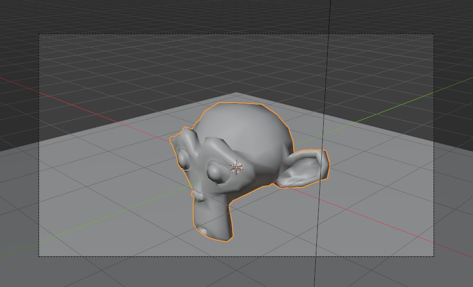
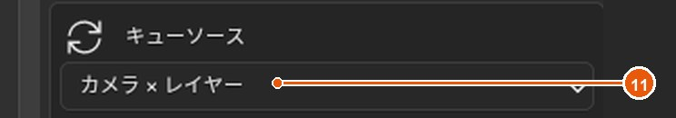
- 11キューソース：「バリアントとテイク / テイク」にすると、保存した組み合わせごとに書き出す行が作られる
- カメラなどを決めて ①「新規保存」を押し、「名前」を付ける。別の組み合わせも同じように保存する。
- 一覧で行を選んで ③「適用」を押すと、その組み合わせに戻る。
- 違う所だけを変えたい時は、④「子を追加」で子を作り、変える項目だけを決める（⑥ 親から受け継ぐ）。
- まとめて書き出す時は、⑪「キューソース」を「バリアントとテイク / テイク」にする。
- 普段は名前・親・カメラ・レイヤーと、必要ならフレーム範囲だけで足りる。
- 歯車の「詳細項目を表示」をオンにすると、エンジン・品質・解像度・World・保存先などを組み合わせごとに上書きする欄が増える。
くわしい設定：5-9. バリアントとテイク、5-11. レンダーキュー
3. 準備
アドオンの入れ方・画面を日本語にする方法・N パネルと「？」ヘルプの共通の使い方は、「SmartTools 全体仕様書」にまとめています。先にそちらの 2〜5 章を読んでください。
| 入れる ZIP | SmartRenderSuite_1.0.0.zip |
|---|---|
| Blender の画面での名前 | Smart Render |
| 動く Blender | 5.1.2 |
4. 画面の場所
3D ビューポートの右側のサイドバー（N パネル）にある「Smart Render」タブに入っています。
| 出る画面 | 3D ビューポート、画像エディター・ノードエディター・シーケンサーなど（Smart Tools Manager の設定で許可されたエディターのサイドバーにも、同じ内容が出ます） |
|---|---|
| タブ | Smart Render |
| モード | どのモードでも使えます（アクティブなオブジェクトは要りません）。 |
- インストール・日本語化・N パネルの開き方・「？」ヘルプの使い方は、全体仕様書の「準備」と「N パネルと『？』ヘルプ」の章を見てください。
- 3D ビューポートのサイドバーで「Smart Render」タブを押します。
- パネルの中に、折りたたみの見出し（左に三角のボタン）が並んでいます。見出しを押すと中身が開きます。
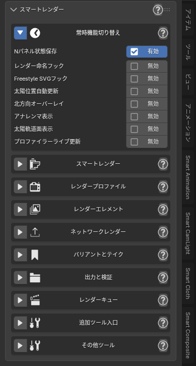
5. 機能の説明
画面の上から順に、見出しごとに説明します。見出しの右の「？」を押すと、同じ内容の説明が画面にも出ます。青い枠の「実例」は、スザンヌなどの簡単なモデルで実際に操作し、3D ビューでの変化を前と後で並べたものです。
5-1. 常時機能切り替え
ボタンを押さなくても裏で自動的に動く機能だけを、ここで入れたり切ったりします。使わない物を切っておくと、普段の作業が軽くなります。
場所「Smart Render」タブのいちばん上の見出しです。
| 表示 | 働き |
|---|---|
| Nパネル状態保存 | 右のボタンが「有効」の時、見出しの開け閉めやパネルの設定の変更を、Blender の設定フォルダーにあるファイルに保存します。次に Blender を開いた時も同じ状態に戻ります。 |
| レンダー命名フック | レンダーを始めた時だけ、テンプレートから出力の名前を作り、終わったら元のパスに戻します。「レンダー出力の命名」で名前を差し替える時だけ有効にします。 |
| Freestyle SVGフック | Freestyle の線画を、レンダーの時に SVG（線のデータ）として自動で書き出す時だけ有効にします。 |
| 太陽位置自動更新 | 再生・フレーム変更・ファイルを開いた時に、「太陽の位置」の太陽の位置を自動で更新します。 |
| 北方向オーバーレイ／アナレンマ表示／太陽軌道面表示 | ビューポートに、北の向き・1 年の太陽の軌跡・太陽が通る面を描きます。必要な時だけ有効にします。 |
| プロファイラーライブ更新 | 「レンダープロファイラー」の計測を裏で更新します。計測する時だけ有効にします。 |
5-2. スマートレンダー
今のシーンの状態をひと目で見て、いちばんよく使う 3 つの操作を行う見出しです。最初はここだけ使えば足ります。
場所「常時機能切り替え」のすぐ下の見出しです。

| 表示 | 働き |
|---|---|
| コンパクト表示（横線のアイコン） | 余白と補足の説明を減らして、パネルを短くします。 |
| 詳細項目を表示（歯車のアイコン） | オンにすると、上級者向けの見出し（「ダッシュボード」「ワークフローレシピ」「実行計画」「ブリッジ」「ログ」）と、細かい設定が増えます。 |
| 状態の欄（アイコンと値が 4 行並んだ欄） | 上から、品質、パス（合成用パスの組み合わせ）、キュー件数（書き出し予定の件数）、監査状態（診断の結果）を表示します。「キュー件数」が 0 の時と、診断で警告・エラーがある時は赤く表示されます。「未実行」は、まだ診断していないという意味です。件数は、シーンや設定が変わると、少し後に自動で数え直します（カメラの「レンダーで無効」を切り替えた時も）。物が多いシーンでは少し間を空け、その間は前の数のままです。まだ一度も数えていない間は「—」です。 |
| シーン基本設定を準備 | 壊れやすい設定の整理、レンダープロファイルの適用、レンダーキューの作り直し、必要な時のファイル出力ノードの更新、事前の診断までを、まとめて実行します。3D ビューの見た目は変わりません。結果は画面下の知らせと、ダッシュボードの件数・診断に出ます。 |
| 出力確認 | 実際にはレンダーせずに、今の設定で保存されるファイルのパスを調べて「ログ」に書きます。「レンダーキュー」の「選択行の出力例」にも、選んでいる行の保存先が出ます。 |
| レンダー開始 | レンダーキューの有効な行を、上から順に書き出します。キューの中で保存先の名前が重なる時は、別名を付けて逃がします。 |
| 保存先 | 書き出しの親フォルダーを表示します。長いパスは途中が省かれます。 |
- 「シーン基本設定を準備」を押します。
- 「出力確認」を押して、「レンダーキュー」の「選択行の出力例」で保存先と名前を確かめます。
- 問題がなければ「レンダー開始」を押します。
実例「シーン基本設定を準備」で予定と診断を整える（スザンヌと床（カメラ付き）で試した様子）
「シーン基本設定を準備」は、書き出しの予定表を作り、事前の診断までまとめて行います。3D ビューの見た目は変わりません。結果は N パネルの「キュー件数」と「監査状態」に出ます。
- 「Smart Render」タブ ＞「スマートレンダー」を開く
- 「シーン基本設定を準備」を押す
- 「キュー件数」と「監査状態」を見る
見どころ：「キュー件数」の 0（赤）が 1 になり、「監査状態」の「未実行」が診断の結果（この例では「警告あり」）に変わりました。警告の中身は、「スマートレンダー」の歯車のアイコン（「詳細項目を表示」）をオンにすると出る「ログ」で読めます。ここまでで「出力確認」と「レンダー開始」に進めます。
5-3. ダッシュボード
レンダーの前に、設定と診断の結果をまとめて確認する見出しです。
場所「詳細項目を表示」がオンの時だけ、「スマートレンダー」の下に出ます。
| 表示 | 働き |
|---|---|
| エンジン／品質／実行デバイス／チャンクサイズ | 今のレンダーエンジン、品質、使う装置（CPU・GPU など）の方針、何フレームずつ区切るかを表示します。 |
| 実効コンポジット／実効検証範囲 | 実際に使われる保存の方法と、確認する出力の範囲を表示します。「実効コンポジット」は、「自動」以外を選んで実際の方法が違う時に赤く表示されます（「自動」の時は赤くなりません）。「実効検証範囲」は、「検証対象」で選んだ範囲と実際の範囲が違う時に赤く表示されます。 |
| カメラ数／ビューレイヤー／バリアントとテイク数／キュー件数／予定レンダー数 | シーンにある数と、書き出す予定の数を表示します。「バリアントとテイク数」以外は、0 の時に赤く表示されます。シーンや設定が変わると、少し後に自動で数え直します（カメラの「レンダーで無効」を切り替えた時も）。物が多いシーンでは少し間を空け、その間は前の数のままです。まだ一度も数えていない間は「—」です。 |
| 再開モード／出力検証／検証範囲／最小サイズKB／検証再試行／ムービー化 | 書き出しの再開や確認の設定を表示します。 |
| 保存先／監査状態／リスクスコア／衝突件数／欠落アセット／最終監査／最終実行 | 診断の結果と、最後に実行した時の結果を表示します。問題がある項目は赤く表示されます。「最終実行」は、「完了」「エラーで中断」「事前診断のエラーで中止」と各件数（成功・検証済み・既存スキップ・自動改名・失敗・検証失敗・無効削除）を表示し、失敗か検証失敗があれば赤くなります。 |
実例カメラを足すとダッシュボードの数が変わる（スザンヌと床（カメラ付き）で試した様子）
「ダッシュボード」の数は、シーンが変わると少し後に自動で数え直されます。カメラの数と赤い表示で、書き出しの準備ができているかが分かります。
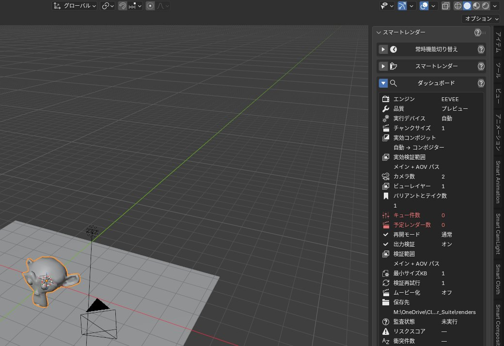
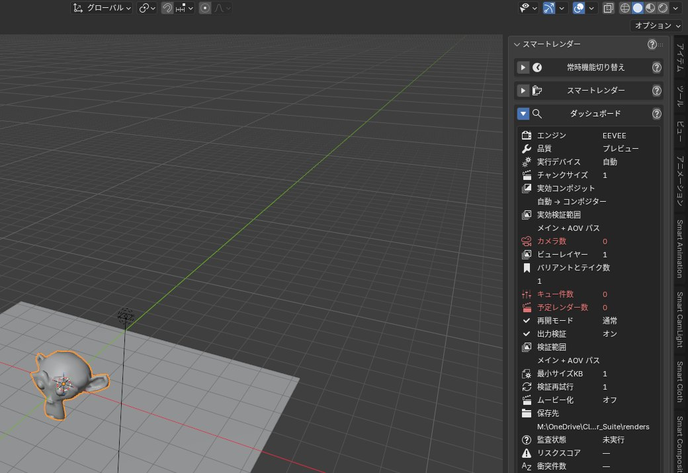
- 「スマートレンダー」の歯車のアイコン（「詳細項目を表示」）をオンにする
- 「ダッシュボード」を開く
- カメラを足す、または消して「カメラ数」を見る
見どころ：カメラを足すと「カメラ数」が 2 になります。全部消すと 0 になって赤く表示され、カメラが足りないことがすぐ分かります。
5-4. レンダープロファイル
レンダーの基本の方針（エンジン・品質・解像度・画像形式など）をまとめて決めます。
場所「スマートレンダー」の下の見出しです（「詳細項目を表示」がオンの時は「ダッシュボード」の下）。
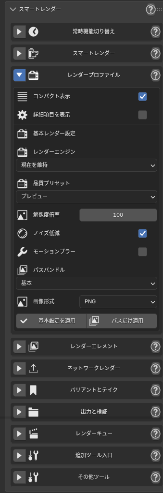
| 表示 | 働き |
|---|---|
| コンパクト表示／詳細項目を表示 | 「スマートレンダー」の見出しにあるボタンと同じ切り替えです。 |
| レンダーエンジン | 「現在を維持」「Cycles」「Eevee」「Workbench」から選びます。 |
| 品質プリセット | 「下書き」（とにかく早く確認）、「プレビュー」（速さと質の中間）、「最終」（提出・納品向け）から選びます。 |
| 解像度倍率 | 書き出す画像の大きさの割合です。 |
| ノイズ低減／モーションブラー | ノイズを減らす処理と、動きのブレを入れるかを決めます。 |
| パスバンドル | 合成用パスの組み合わせです。「変更なし」「基本」「合成」「ルックデブ」「ライティング」「Crypto / ID」「テクニカル」「データセット」から選びます。 |
| 画像形式 | 「PNG」「OpenEXR」「OpenEXR Multilayer」「JPEG」「TIFF」「WebP」から選びます。 |
| 基本設定を適用 | 選んだエンジン・品質・保存形式と、パスバンドルを、今のシーンにまとめて反映します。 |
| パスだけ適用 | パスバンドルだけを、ビューレイヤーに反映します。 |
5-5. レンダーエレメント
合成用のパス（レンダーエレメント）を 1 つずつ選び、書き出しの準備をします。3ds Max のレンダーエレメントに近い使い方です。
場所「レンダープロファイル」の下の見出しです。
| 表示 | 働き |
|---|---|
| レンダーエレメントを有効化 | オンにすると、選んだパスを書き出す対象にします。 |
| 出力モード | 「EXR 分割ファイル」（パスごとに別のファイル）か、「マルチレイヤー EXR」（ビューレイヤーごとに 1 つのマルチレイヤーの OpenEXR にまとめる）を選びます。 |
| クイックセット | よく使う組み合わせを選びます（「現在のパス構成から」「ビューティーのみ」「合成」「ルックデブ」「ライティング」「Crypto / ID」「テクニカル」「データセット」）。 |
| クイックセット読込／全部／ビューティーのみ | 「クイックセット読込」は、選んだクイックセットを下のチェックに入れます。「全部」は全部にチェックを入れます。ボタンの「ビューティーのみ」は、ビューティー（普通の色の画像）1 個だけにします。クイックセットの「ビューティーのみ」を読み込んだ時は、ビューティーとアルファの 2 個になります。 |
| 選択エレメント数／判定セット／出力形式／保存先／想定エレメント | 選んでいるパスの数、実際に使われるパスの組み合わせ（「判定セット」）、保存の形式と保存先のフォルダー、書き出される予定のパスの名前（「想定エレメント」）を表示します。「想定エレメント」は、下のチェックの欄と同じ名前で、名前の切れ目で複数行に分けて出ます。 |
| 基本／ID / マスク／ライティング／サーフェス内訳／ボリューム / SSS | パスの種類ごとのチェック欄です。「ビューティー」「Z深度」「法線」「ベロシティ」「Cryptomatteオブジェクト」などを個別にオン・オフします。 |
| レンダーエレメントを準備 | 必要なパスの設定と、ファイルに書き出すノード（ファイル出力ノード）をまとめて整えます。 |
| ノード更新 | 今オンのパスから、ファイル出力ノードを作り直します。ノードの見出しは今の言語で出ます。入力の名前は言語に関係なく英語です（Beauty、ZDepth、Velocity など）。「EXR 分割ファイル」では、フレーム番号と入力の名前でファイルが作られます（例：0001Beauty.exr）。#### はファイル名のテンプレートだけに使い、Cryptomatte のチャンネル名やメタデータには入りません。「マルチレイヤー EXR」では、ビューレイヤーの名前とフレーム番号の 1 ファイルになります（例：ViewLayer_0001.exr）。チェックを変えた後に押し忘れても、「レンダーキューを実行」の時に、今のチェックに合わせて組み直します。レンダーキューでは、各行の対象ビューレイヤーに対応する、このツールが作った出力ノードだけを有効にし、ほかのレイヤー用の出力を一時的に止めます。処理後は出力ノードの有効・無効を元へ戻します。 |
実例パスごとの書き出しノードを組む「レンダーエレメントを準備」（スザンヌと床で試した様子）
深度・法線・影などのパス（レンダーエレメント）を別々の画像で書き出すには、コンポジットのノードを組む必要があります。「レンダーエレメントを準備」と「ノード更新」で、選んだパスの書き出しノードをまとめて組みます。
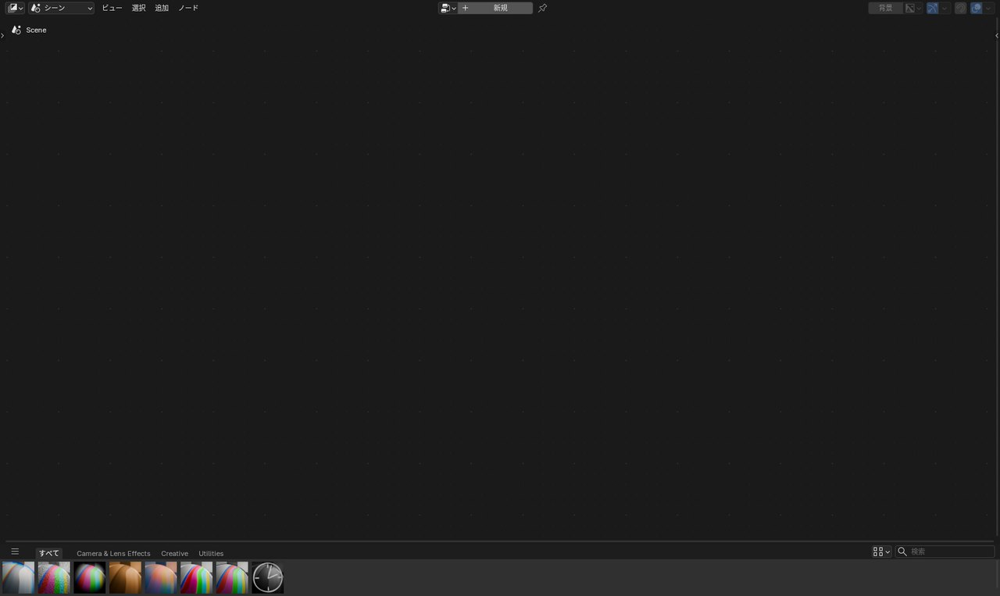
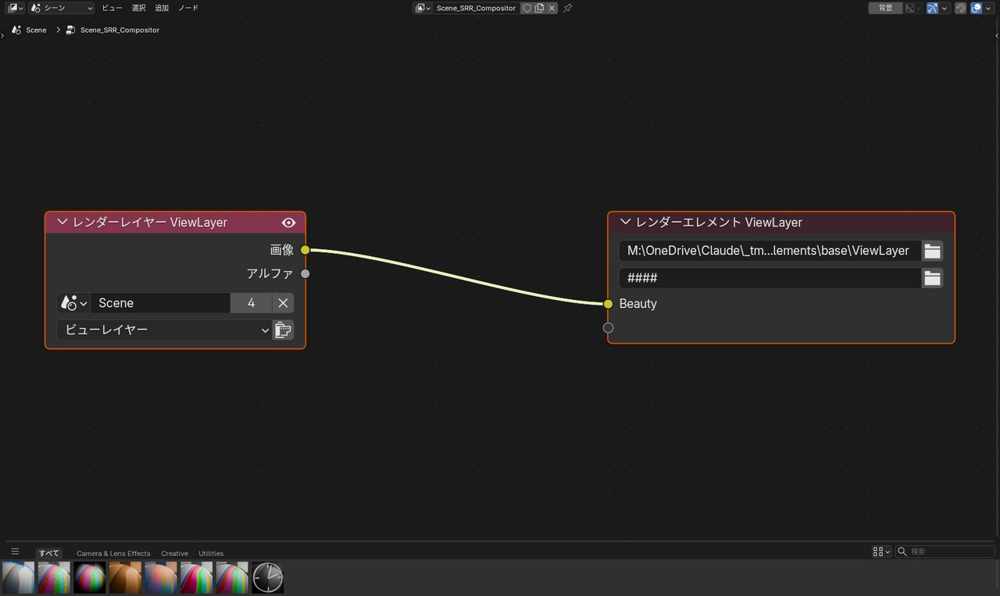
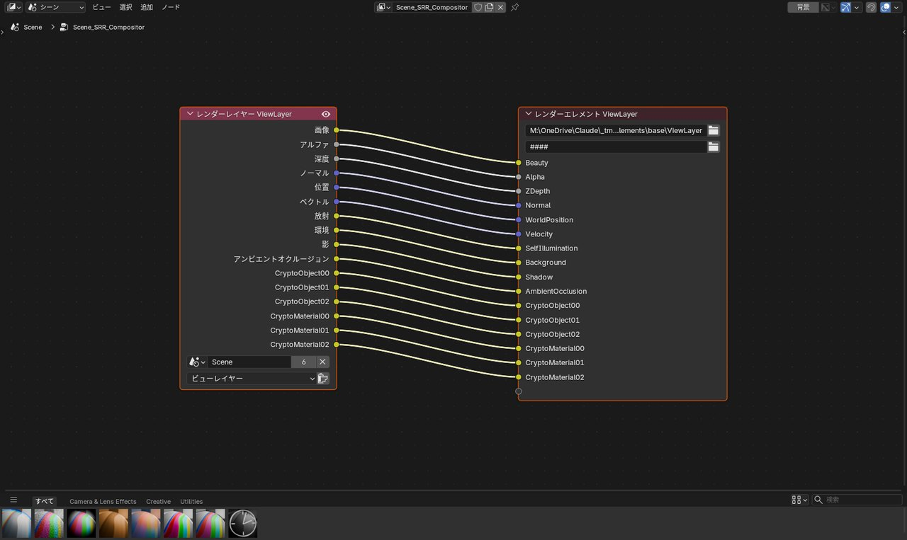
- 「Smart Render」タブ ＞「レンダーエレメント」で「レンダーエレメントを有効化」をオンにする
- まずボタンの「ビューティーのみ」を押す（普通の色の画像 1 個だけにする）
- 「レンダーエレメントを準備」を押す
- 「ノード更新」を押す
- コンポジットのノードエディターで、組まれたノードを確かめる
- 「クイックセット」を「合成」にして「クイックセット読込」を押し、もう一度「レンダーエレメントを準備」と「ノード更新」を押す
見どころ：空だったコンポジットに、ビューレイヤーの画像をファイルに書き出すノードが作られました。ボタンの「ビューティーのみ」では 1 本、「クイックセット」で「合成」を読み込むと、その分の線がノードに足されます。右のノードの入力の名前（Beauty_####、ZDepth_#### など）がそのままファイル名になり、#### の所にフレーム番号が入ります。3D ビューの見た目は変わりません。
実例「クイックセット読込」でチェックと「想定エレメント」を切り替える（スザンヌと床で試した様子）
パネルを開くと、書き出すパスにチェックが入っています。「クイックセット」を選んで「クイックセット読込」を押すと、チェックと「選択エレメント数」「想定エレメント」が一緒に変わります。
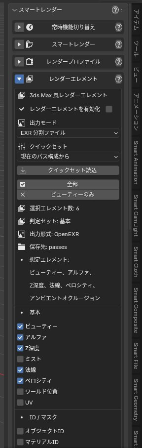
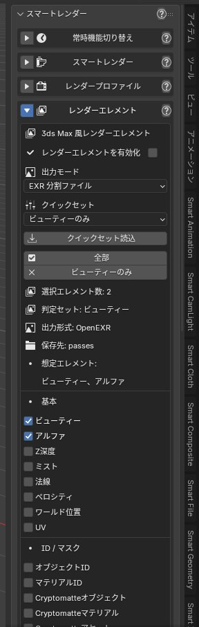
- 「Smart Render」タブ ＞「レンダーエレメント」を開く
- チェックの欄と「選択エレメント数」「想定エレメント」を見る
- 「クイックセット」を「ビューティーのみ」にして「クイックセット読込」を押す
見どころ：最初は 6 個のパスにチェックが入り、「選択エレメント数」も 6 です。「クイックセット」の「ビューティーのみ」を読み込むと、ビューティーとアルファの 2 個になり、チェック・数・名前が一緒に減りました（「全部」の隣のボタン「ビューティーのみ」は、ビューティー 1 個だけにします）。チェックの欄の数と、書き出されるパスの数はいつも同じです。
5-6. ネットワークレンダー
ほかのパソコンやレンダーファームで書き出すための、設定ファイルと実行スクリプトを書き出します。
場所「レンダーエレメント」の下の見出しです。
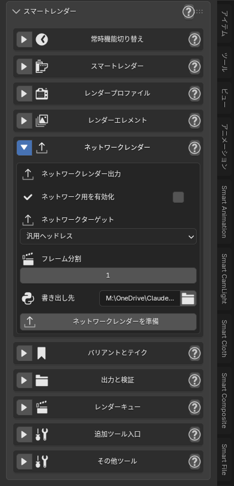
| 表示 | 働き |
|---|---|
| ネットワーク用を有効化 | ネットワークレンダー用の書き出しを使うかを決めます。 |
| ネットワークターゲット | 書き出し先の種類を選びます（「汎用ヘッドレス」「Deadline」「Flamenco」など）。 |
| フレーム分割 | 何フレームずつに区切って仕事を分けるかです。「実行計画」の「フレーム分割単位」と同じ値です。 |
| 書き出し先 | ファイルを書き出す場所です。 |
| ネットワークレンダーを準備 | 共通の設定ファイル、ターゲット別の JSON、.sh / .bat のスクリプトをまとめて書き出します。 |
5-7. ワークフローレシピ
用途ごとの安全な設定一式を、ワンクリックで今のシーンに入れます。細かい所は、そのあと各見出しで直せます。
場所「詳細項目を表示」がオンの時だけ、「ネットワークレンダー」の下に出ます（オフの時は「追加ツール入口」の「レシピを選んで適用」から使えます）。
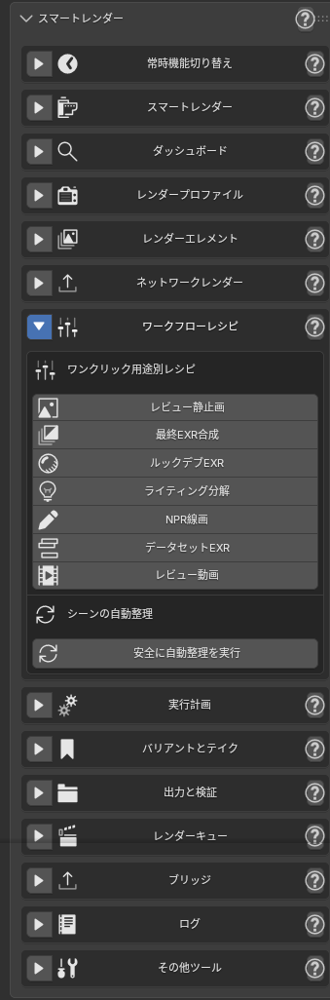
| 表示 | 働き |
|---|---|
| レビュー静止画 | 今のエンジンのまま、PNG で書き出し、メイン画像だけを確認し、動画化は切ります。 |
| 最終EXR合成 | Cycles・最終品質・マルチレイヤー EXR で、合成向けの最終出力にします。 |
| ルックデブEXR | 材質と照明の試行向けに、Cycles のプレビュー品質と広めのパスで EXR を書き出します。 |
| ライティング分解 | 照明のパスを確認しやすい EXR の設定にします。 |
| NPR線画 | Freestyle の線画を、PNG で軽く確認できる設定にします。 |
| データセットEXR | 再開しやすさとパスの確認を重視した、データ作り向けの EXR の設定にします。 |
| レビュー動画 | PNG の連番画像を基本にして、書き出すスクリプトに FFmpeg で動画にする命令を入れる設定にします。 |
| シーンの自動整理／安全に自動整理を実行 | 逆になったフレーム範囲、拡張子の重複、空の上書き、重複したセレクターなど、壊れやすい設定を安全な形に直します。 |
5-8. 実行計画
書き出しをどの装置で、何フレームずつ、どの優先度で行うかの方針を決め、予定を確認します。
場所「詳細項目を表示」がオンの時だけ、「ワークフローレシピ」の下に出ます。
| 表示 | 働き |
|---|---|
| 実行デバイス方針 | 「自動」「CPU」「GPU」「ハイブリッド」から選びます。下に「この PC のレンダーにも使います」と出ていれば、このパソコンでの書き出しにも使います。「CPU」「GPU」が書き出しに反映されるのは Cycles の時だけで、それ以外は書き出すファイルに目安として入ります。 |
| 優先度ヒント | ファームなどに渡す優先度の目安です。 |
| フレーム分割単位 | 何フレームずつに区切るかです。 |
| 同時タスク数ヒント／メモリ見積り(GB)／ジョブタグ／時間サブサンプル／空間サブサンプル／蓄積サンプル | 細かい実行の目安です。 |
| 実行プレビュー | キューの行ごとに、フレーム数と分割数を表示します。有効なキューがない時は、「有効なキューがまだありません。」と表示します。 |
5-9. バリアントとテイク
カメラ・ビューレイヤー・フレーム範囲などの組み合わせに名前を付けて保存し、あとで呼び出したり、まとめて書き出したりします。
場所「ネットワークレンダー」の下の見出しです（「詳細項目を表示」がオンの時は「実行計画」の下）。
| 表示 | 働き |
|---|---|
| 新規保存 | 今のカメラ・ビューレイヤー・World などから、新しいバリアントとテイクを作ります。 |
| 現在を反映 | 今のビューレイヤーの上書きの状態を、選んでいるバリアントとテイクに取り込みます。 |
| 適用 | 選んでいるバリアントとテイクを、今のシーンに当てはめて確認します。 |
| 削除／子を追加／複製 | 選んでいるものを消す、それを親にして子を作る、同じものを複製する、のボタンです。 |
| 一覧の右の ＋／複製／－ | 一覧への追加、複製、削除です。 |
| 有効／名前／説明 | 選んでいるバリアントとテイクを使うか、その名前と説明です。最初から入っている「Default」の「説明」には、「シーンの最初の状態」（英語の設定では「Initial scene state」）と入っています。 |
| 親バリアントとテイク | 親を選ぶと、決めていない項目は親の設定を受け継ぎます。下の「継承チェーン」に、受け継ぐ順番が出ます。 |
| カメラ／ビューレイヤー | 使うカメラとビューレイヤーです。 |
| 専用フレーム範囲／開始フレーム／終了フレーム | オンにすると、このバリアントとテイクだけのフレーム範囲を使います。 |
| このバリアントとテイクの出力例 | 保存されるファイルのパスの例を表示します。設定を変えると、少し後に更新されます。 |
実例カメラ違いを保存して「適用」で切り替える（スザンヌと床（カメラ 2 台）で試した様子）
今のカメラなどの組み合わせを「新規保存」で名前を付けて残し、「適用」で呼び戻せます。カメラごとの見え方を、すぐに切り替えて確かめられます。
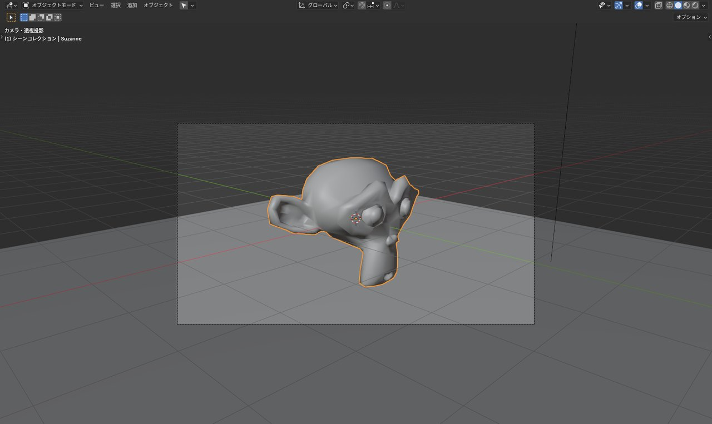
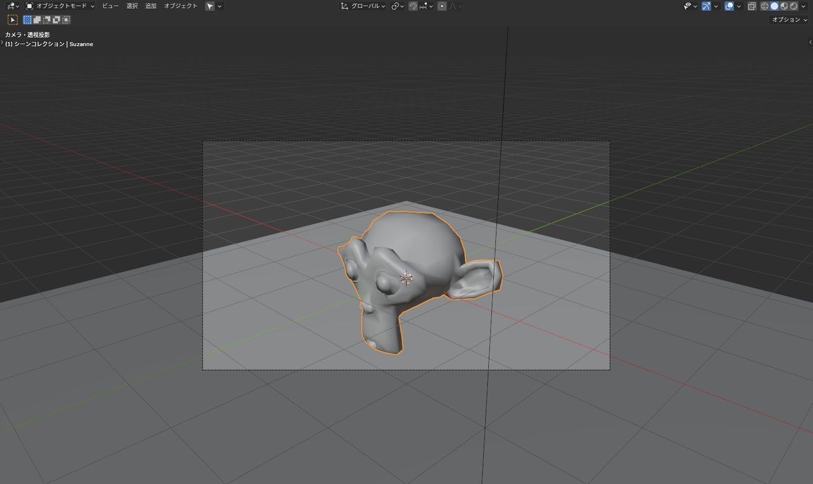
- カメラ「Camera」をシーンのカメラにして、「バリアントとテイク」の「新規保存」を押し、「名前」に「テイクA」と入れる
- カメラ「Camera2」に替えて、もう一度「新規保存」を押し、「名前」に「テイクB」と入れる
- 一覧で「テイクA」の行を選び、「適用」を押す
見どころ：「適用」を押すと、シーンのカメラが保存した物に戻り、カメラから見た図で、スザンヌの顔の向きが右向きから左向きに変わりました。「レンダーキュー」の「キューソース」を「バリアントとテイク / テイク」にすると、保存した組み合わせごとに書き出せます。
5-10. 出力と検証
保存するフォルダーとファイル名の決まり、書き出し後の確認、動画化の設定をします。
場所「バリアントとテイク」の下の見出しです。
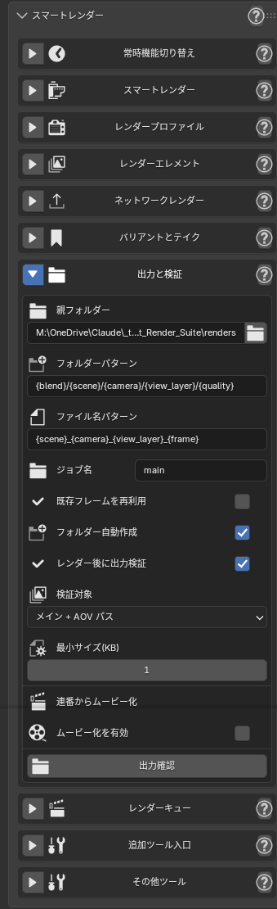
| 表示 | 働き |
|---|---|
| 親フォルダー | 書き出しの一番上のフォルダーです。 |
| フォルダーパターン／ファイル名パターン | フォルダーとファイルの名前の決まりです。{scene}（シーン名）、{camera}（カメラ名）、{frame}（フレーム番号）のような記号（トークン）が、書き出しの時に実際の名前に置き換わります。 |
| ジョブ名 | 書き出しの仕事の名前です。 |
| 既存フレームを再利用 | オンにすると、既にあるフレームは書き直さずに使い、続きから再開できます。「レンダー後に出力検証」もオンの時は、既にあるフレームを確かめて、壊れていれば書き直します。 |
| フォルダー自動作成 | 保存先のフォルダーがなければ作ります。 |
| レンダー後に出力検証 | 書き出したファイルが本当にあるか、小さすぎないかを確かめます。オンの時、「検証対象」と「最小サイズ(KB)」も設定できます。「最小サイズ(KB)」より小さいファイルは失敗として扱い、「壊れた出力を削除して再試行」がオンならそのファイルを消します。64×64 のようなごく小さな解像度で試すと、軽いパスが基準の 1 KB に届かず失敗になることがあります。その時は「最小サイズ(KB)」を 0 にします。 |
| 連番からムービー化 | 「ムービー化を有効」をオンにすると、「ムービープリセット」（「H.264 MP4」「ProRes Proxy MOV」など）と「ムービー名パターン」を選べます。動画を作る FFmpeg の命令は、「ネットワークレンダー」や「ブリッジ」で書き出すスクリプト・設定ファイルに入ります。「レンダー開始」だけでは動画は作られません。対象は 2 フレーム以上の書き出しだけです。 |
| 出力確認 | レンダーせずに、保存されるパスを調べて「ログ」に書きます（「スマートレンダー」の「出力確認」と同じです）。 |
5-11. レンダーキュー
書き出しの予定表（キュー）を作り、上から順番に実行します。
場所「出力と検証」の下の見出しです。
| 表示 | 働き |
|---|---|
| キューソース | 予定表の作り方です。「カメラ × レイヤー」（カメラとビューレイヤーの組み合わせから作る）か、「バリアントとテイク / テイク」（保存したバリアントとテイクから作る）を選びます。 |
| フレーム範囲 | 「現在フレーム」「シーン範囲」「カスタム範囲」から選びます。最初は「現在フレーム」です。「カスタム範囲」の時は、開始と終了のフレームを入れます。 |
| コンポジット出力 | 「自動」「直接出力」「コンポジター / ファイル出力」から、保存の方法を選びます。 |
| ビューレイヤー展開 | 「アクティブのみ」か「全レイヤー」かを選びます。 |
| レンダーキューを同期 | 上の設定から、予定表を作り直します。 |
| レンダーキューを実行 | 予定表の有効な行を、上から順に書き出します（「スマートレンダー」の「レンダー開始」と同じです）。 |
| ごみ箱のボタン | 予定表を空にします。 |
| 一覧の右の ＋／複製／－／上下の矢印 | 行の追加、複製、削除、並べ替えです。 |
| 予定レンダー数 | 書き出す予定の数を表示します。シーンや設定が変わると、少し後に自動で数え直します（カメラの「レンダーで無効」を切り替えた時も）。物が多いシーンでは少し間を空け、その間は前の数のままです。まだ一度も数えていない間は「—」です。 |
| 選択中キュー項目 | 一覧で選んでいる行の設定が、この下に並びます。 |
| この行を有効／表示名／ソース種別 | 選んでいる行を書き出すか、表示する名前、何から作った行か（「ペア」か「バリアントとテイク」）です。 |
| カメラ／ビューレイヤー | 選んでいる行で使うカメラとビューレイヤーです。 |
| 選択行の出力例 | 選んでいる行で保存されるパスの例を表示します。設定を変えると、少し後に更新されます。 |
実例キューを実行して「最終実行」で結果を見る（スザンヌと床（カメラ付き、1 フレームだけ）で試した様子）
「レンダーキューを実行」は、予定表の有効な行を上から順に書き出します。終わると「ダッシュボード」の「最終実行」に、結果と件数が出ます。各行では、対象ビューレイヤー用にこのツールが作った出力ノードだけが有効になります。ほかのレイヤー用の出力は一時的に止まり、処理後は元の有効・無効に戻ります。

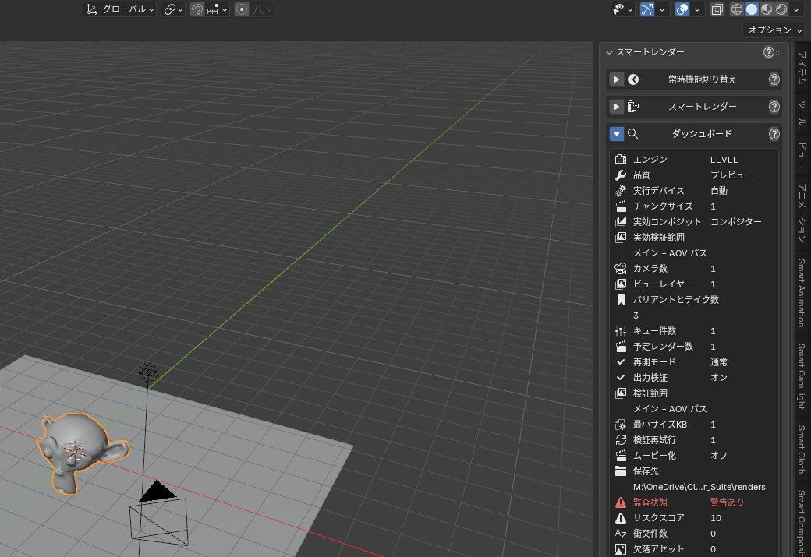
- 「スマートレンダー」の歯車のアイコン（「詳細項目を表示」）をオンにする
- 「ダッシュボード」を開く
- 「レンダーキュー」の「レンダーキューを実行」を押す
- 書き出しが終わったら、「ダッシュボード」の「最終実行」を見る
見どころ：「最終実行」の「—」が、「完了」と各件数に変わりました。この例では 1 枚を書き出し、「成功」が 1 です。失敗か検証失敗があると、この欄が赤くなります。
5-12. 追加ツール入口
簡単な表示のままで、診断・整理・レシピ・書き出し・ログの操作を呼び出す見出しです。
場所「詳細項目を表示」がオフの時だけ、「レンダーキュー」の下に出ます。
| 表示 | 働き |
|---|---|
| 診断 | 出力の名前のぶつかり、見つからないファイル、保存先の状態などを調べます。 |
| シーンを自動整理 | 壊れやすい設定を安全な形に直します。 |
| AOVノード | 今オンのパスから、ファイル出力ノードを作り直します。 |
| レシピを選んで適用 | ワークフローレシピを選んで、今のシーンに入れます。 |
| パスバンドルを適用 | 選んでいるパスバンドルを、ビューレイヤーに反映します。 |
| 書き出しターゲット／マニフェスト保存先 | 設定ファイルを渡す相手の種類と、保存する場所です。 |
| 共通／ブリッジ／スクリプト／インポート | 共通の設定ファイル、ターゲット別の JSON、実行スクリプトの書き出しと、保存した設定ファイルの読み込みです。 |
| ログを削除／元の詳細表示 | ログを空にする、詳しい表示（「詳細項目を表示」）に切り替える、のボタンです。上の「最新監査」の行には、診断の結果とログの件数が出ます。ログの中身は、詳しい表示の「ログ」の見出しで見られます。まだ診断していない時は「最新監査: 未実行 / ログ 0 件」と表示されます。 |
5-13. ブリッジ
ほかのソフトやレンダーマネージャーに渡すための設定ファイルとスクリプトを書き出します。
場所「詳細項目を表示」がオンの時だけ、「レンダーキュー」の下に出ます。
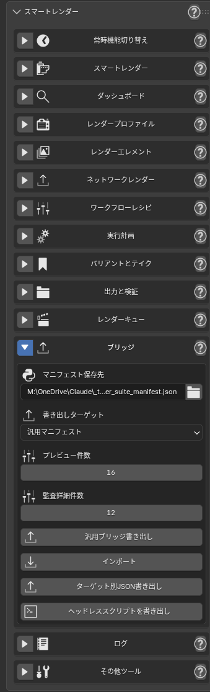
| 表示 | 働き |
|---|---|
| マニフェスト保存先／書き出しターゲット | 設定ファイルの保存先と、渡す相手の種類（「汎用マニフェスト」「Maya Render Setup」「Unreal Movie Render Queue」など）です。 |
| プレビュー件数／監査詳細件数 | 確認の表示で出す件数です。 |
| 汎用ブリッジ書き出し／インポート | 今の設定・バリアントとテイク・キューを JSON に保存する、または保存したものから戻す、のボタンです。 |
| ターゲット別JSON書き出し | 選んだ相手向けの JSON を書き出します。 |
| ヘッドレススクリプトを書き出し | 画面なしの Blender（ヘッドレス）で今のキューを実行するためのスクリプト（.sh / .bat）を作ります。 |
5-14. ログ
診断・準備・書き出しで出た通知、警告、エラーを一覧で見ます。
場所「詳細項目を表示」がオンの時だけ、「ブリッジ」の下に出ます。
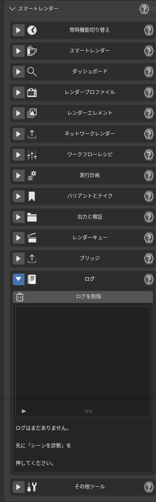
| 表示 | 働き |
|---|---|
| ログを削除 | 一覧を空にします。 |
| ログの一覧 | 記録された内容を並べます。行を選ぶと、その行の時刻と全文が一覧の下に出ます。まだ何もない時は、先に「シーンを診断」を押すよう表示されます。 |
5-15. その他ツール
レンダーに関わる補助ツールが入っています。使うツールだけを、その時に読み込みます。
場所「Smart Render」タブのいちばん下の見出しです。
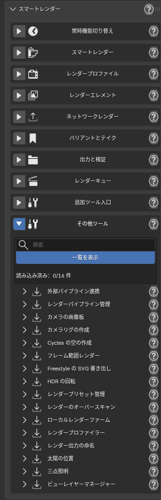
| 表示 | 働き |
|---|---|
| 検索の欄（虫眼鏡） | ツールの名前で一覧を絞り込みます。 |
| 一覧を表示 | ツールの一覧を出すか隠すかを切り替えます。青く表示されている時は、一覧が出ています。ツール本体を有効・無効にするボタンではありません。 |
| 読み込み済みの件数 | 「読み込み済み: 0/16 件」のように、読み込んだツールの数を表示します。 |
| 検索一致 | 検索の欄に文字が入っている間、「検索一致: 1/16 件」のように、一覧に残ったツールの数を表示します。1 件も一致しない時は、一致するツールが無いと表示します。 |
| 読み込み済み／待機中 | 各ツールの状態です。ツールの名前の行の左の「＞」を押して開くと表示されます。「待機中」のツールは、まだ読み込まれていません。 |
| 読み込む | ツールの名前の行を開くと出るボタンです。押すとそのツールを読み込み、「クイックアクセス」の枠に操作のボタンが出ます。ツールによっては、その下にツールのパネルの名前と「∨」の付いたボタンも出て、押すとそのパネルを小さな窓で開けます。 |
| カメラの画像板 | カメラに付いて動く画像の板を作ります。 |
| カメラリグの作成 | ドリー・クレーン・2D のカメラリグを作ります。 |
| Cycles の空の作成 | 「プロシージャルスカイを作成」を押すと、エンジンを Cycles に切り替え、雲と太陽のある空のワールドを作って、シーンのワールドにします。下の「設定」で、最後に作った空の明るさ・空の色・雲・太陽を調整できます。失敗した時は、シーンを変えません。「クイックアクセス」の下の「ダイナミックスカイ」のボタンを押すと、「作成」と同じ設定を小さな窓で開けます。 |
| フレーム範囲レンダー | 「1,2,5-8」のように、指定したフレームだけをレンダーします。 |
| Freestyle の SVG 書き出し | Freestyle の線画を SVG に書き出します。 |
| HDR の回転 | 3D ビューの上で、環境画像（HDRI）の向きを回します。 |
| レンダープリセット管理 | レンダー設定を保存・読込・比べます。プリセットを読み込む時は、先に今のシーンと違う設定を分類ごとに並べた窓が出て、項目ごとのチェックで入れる設定を選べます。窓の上の「設定」で、「利用可能なすべての設定」か、エンジンなどの分類 1 つだけかを選びます。 |
| レンダーのオーバースキャン | 合成用の余白を付けてレンダーします。 |
| ローカルレンダーファーム | 自分のパソコンで、画面なしの Blender を複数動かしてレンダーします。 |
| レンダープロファイラー | ビューポートやレンダーの重さを計測します。 |
| レンダー出力の命名 | テンプレートで出力の名前とフォルダーを組み立てます。 |
| 太陽の位置 | 場所・日付・時刻から太陽の位置を決めます。 |
| 三点照明 | 「三点照明を作成」を押すと、選んだオブジェクトを中心に、キー・フィル・バックの 3 灯を作ります。ライトの向きはカメラの位置を元に決まり、カメラが無い時や、カメラが物と同じ位置・真上にある時は、正面（-Y 側）から見た向きで置きます。下の「設定」の値を変えると、変えた項目だけが最後に作った 3 灯にすぐ反映されます。「高さ」「距離」はライトの位置です。「基準の強さ」はいちばん明るいライトの強さです。「コントラスト」は明るさの差で、0 で 3 灯が同じ明るさ、プラスでフィルとバック、マイナスでキーが弱くなります。「キーの角度」「フィルの角度」「バックの角度」は、カメラの方向から各ライトまでの角度です。「キーライト」と「フィルとバックのライト」の中の「種類」でライトの種類を選び、「形状」「サイズ」で光を出す面の形と大きさを決めます（種類によって、半径やスポットの角度などの項目に変わります）。手で動かしたライトは、「基準の強さ」や「コントラスト」を変えても位置が戻りません。名前を変えた灯や消した灯には反映されません。 |
| ビューレイヤーマネージャー | ビューレイヤーの切り替えや管理を助けます。 |
実例選んだ物の周りに 3 つのライトを置く「三点照明」（スザンヌと床（カメラ付き）で試した様子）
撮影の定番の、キー（主光）・フィル（補助光）・バック（後ろからの光）の 3 灯を、選んだ物の周りに一度に置きます。ライトの向きはカメラの位置を元に決まります。カメラが無い時や、カメラが物と同じ位置や真上にある時は、物を正面（-Y 側）から見た向きで置きます。
- スザンヌを選ぶ
- 「Smart Render」タブ ＞「その他ツール」で「三点照明」の行を開き、「読み込む」を押す
- 出てきた「クイックアクセス」の「三点照明を作成」を押す
見どころ：ライトが無く真っ暗だったスザンヌが、周りに置かれた 3 つのライト（キー・フィル・バック）で照らされ、形と陰影が見えるようになりました。引いた図で、3 つのライトがスザンヌを囲む位置に置かれたことが分かります。
実例カメラが無いシーンでも三点照明を置く（スザンヌ（カメラなし）で試した様子）
カメラを置いていないシーンでも「三点照明を作成」を使えます。物を正面（-Y 側）から見た向きで 3 灯を置きます。
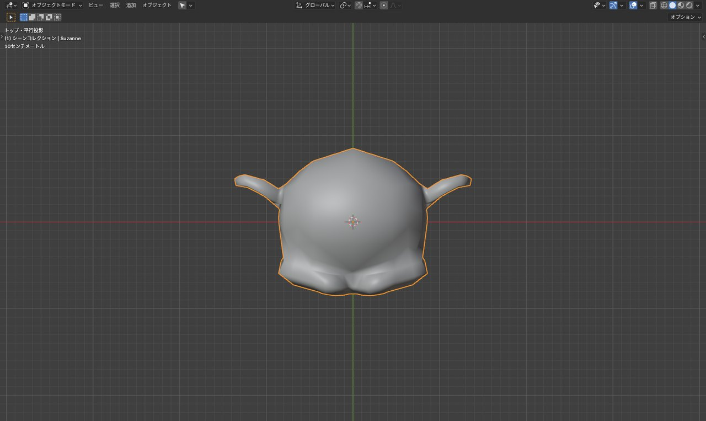
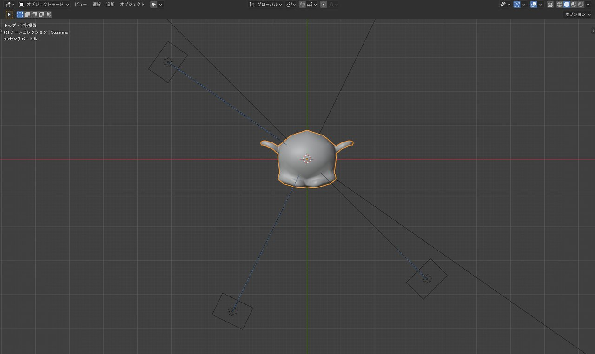
- スザンヌを選ぶ
- 「Smart Render」タブ ＞「その他ツール」で「三点照明」の行を開き、「読み込む」を押す
- 「三点照明を作成」を押す
見どころ：スザンヌの正面側にキーとフィル、後ろにバックが置かれました。カメラが無くても、顔の側から光が当たる配置になります。
実例作った後で三点照明の値を変える（スザンヌと床で試した様子）
「三点照明を作成」の下の「設定」で値を変えると、変えた項目だけが、最後に作った 3 灯にすぐ反映されます。作り直す必要はありません。
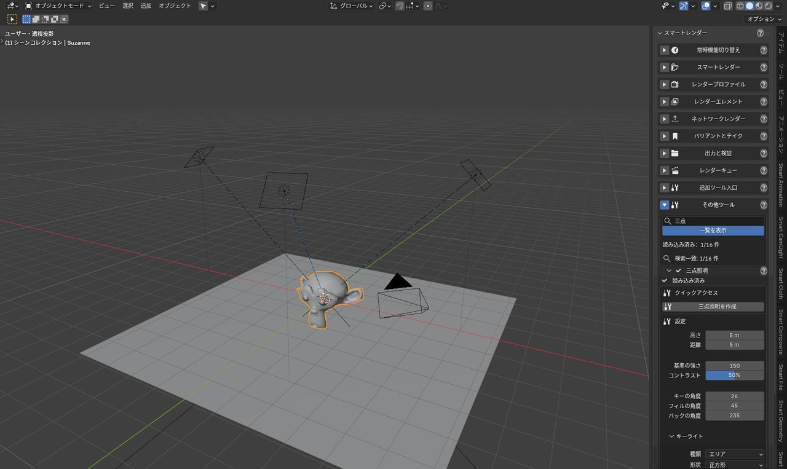
- スザンヌを選ぶ
- 「その他ツール」の検索の欄に「三点」と入れて一覧を絞り（「検索一致: 1/16 件」と出ます）、「三点照明」の行を開いて「読み込む」を押す
- 「三点照明を作成」を押す
- 「設定」の「基準の強さ」を 150 にする（ライトの位置は動きません）
- 「高さ」と「距離」を変える
- 「コントラスト」を 0 にする（3 灯が同じ明るさになる）
- 「コントラスト」を 80% にする（フィルとバックが弱くなる）
見どころ：「高さ」「距離」を変えると 3 灯の位置がすぐ動きます。「コントラスト」は明るさの差で、0 で 3 灯が同じ、プラスでフィルとバック、マイナスでキーが弱くなります。右の N パネルの値と見比べてください。
実例雲のある空をワンボタンで作る「Cycles の空の作成」（スザンヌと床で試した様子）
Cycles 用の、雲と太陽のある空を作ります。押すと、エンジンを Cycles に切り替え、できた空をシーンのワールドにします。
- 「Smart Render」タブ ＞「その他ツール」で「Cycles の空の作成」の行を開き、「読み込む」を押す
- 「プロシージャルスカイを作成」を押す
- 下に出る「設定」の「空の色」などで色や雲を調整する
見どころ：背景が雲のある空に変わり、スザンヌにも空の光が当たりました。「設定」で空の色を変えると、背景と光の色が一緒に変わります。
実例ドリー（台車）型のカメラリグを作る「カメラリグの作成」（スザンヌで試した様子）
カメラを、動かしやすい操作用の骨（リグ）付きで作ります。「カメラリグを作成」をそのまま押すと、台車（ドリー）のように滑らせて使う型のリグができます。
- 「Smart Render」タブ ＞「その他ツール」で「カメラリグの作成」の行を開き、「読み込む」を押す
- 出てきた「クイックアクセス」の「カメラリグを作成」を押す
見どころ：カメラと、それを動かすための操作用の骨（オレンジの矢印や輪の形）がまとめて作られました。右奥の輪は狙いの点で、カメラはこの点の方を向くように設定されています。
そのほかの画面
6. よく使う手順
今のフレームを書き出す
まずは今のフレームを、決まった場所に画像として保存します。
- 「レンダープロファイル」を開き、「品質プリセット」と「画像形式」を選んで「基本設定を適用」を押します。
- 「出力と検証」を開き、「親フォルダー」に保存先を入れます。
- 「レンダーキュー」を開き、「フレーム範囲」が「現在フレーム」になっているか確かめます。
- 「スマートレンダー」を開き、「シーン基本設定を準備」を押します。
- 「出力確認」を押し、「レンダーキュー」の「選択行の出力例」で保存されるパスを確かめてから、「レンダー開始」を押します。
結果：「親フォルダー」の下に、「フォルダーパターン」と「ファイル名パターン」で決めた名前で画像が保存されます。レンダーできるカメラが複数ある時は、カメラごとに 1 枚ずつ保存されます。
アニメーション全体を書き出す
シーンの開始から終了フレームまでを書き出します。
- 「レンダーキュー」を開きます。
- 「フレーム範囲」を「シーン範囲」にします。
- 「レンダーキューを同期」を押します。
- 一覧で確かめたい行を選んでから「出力確認」（「出力と検証」の見出しにあります）を押し、「選択行の出力例」で保存先を確かめます。
- 「レンダーキューを実行」を押します。
結果：一覧の有効な行が、上から順にフレームごとに書き出されます。
途中で止まった書き出しを再開する
- 「出力と検証」を開き、「既存フレームを再利用」をオンにします。
- 「レンダーキュー」で「レンダーキューを実行」を押します。
結果：既に保存されているフレームは使い回し、残りのフレームを書き出します。「レンダー後に出力検証」がオンの時は、壊れていたフレームも書き直します。
設定違いを保存して書き分ける
カメラやフレーム範囲の違う組み合わせを、名前を付けて書き出します。
- カメラなどを書き出したい状態にします。
- 「バリアントとテイク」を開き、「新規保存」を押します。
- 「名前」を入れ、必要なら「専用フレーム範囲」をオンにして開始と終了を入れます。
- ほかの組み合わせも同じように保存します。
- 「レンダーキュー」で「キューソース」を「バリアントとテイク / テイク」にし、「レンダーキューを同期」を押します。
- 「レンダーキューを実行」を押します。
結果：保存したバリアントとテイクごとに、書き出しが行われます。
合成用のパスも一緒に書き出す
- 「レンダーエレメント」を開き、「レンダーエレメントを有効化」をオンにします。
- 「クイックセット」で「合成」などを選び、「クイックセット読込」を押します。
- 要らないパスのチェックを外します。
- 「レンダーエレメントを準備」を押します。
- 「レンダーキュー」で「レンダーキューを同期」を押します。
- 「スマートレンダー」で「出力確認」をしてから「レンダー開始」を押します。
結果：選んだパスが、「出力モード」で選んだ形（EXR 分割ファイルかマルチレイヤー EXR）で保存されます。
7. 困った時
- 「ダッシュボード」や「ログ」の見出しが見当たりません。
- 上級者向けの見出しは、「詳細項目を表示」をオンにした時だけ出ます。「スマートレンダー」の見出しの歯車のアイコン、または「レンダープロファイル」の「詳細項目を表示」で切り替えます。
- レンダーキューが空のままです（「キュー件数」が 0）。
- 「レンダーキュー」の「レンダーキューを同期」を押すと、今の設定から予定表を作ります。「キューソース」が「バリアントとテイク / テイク」の時は、先にバリアントとテイクを保存してください。
- 「レンダー開始」を押しても、何も書き出されません。
- 最初に入っている「Current Scene (Disabled)」の行は、書き出さない設定になっています。先に「シーン基本設定を準備」か、「レンダーキュー」の「レンダーキューを同期」を押して、書き出す行を作ってください。事前の診断でエラーが見つかった時も、書き出しを始めずに止まります。その時は「詳細項目を表示」をオンにして「ログ」の見出しを開き、内容を確かめてください。
- 保存先やファイル名を、レンダーせずに確かめたいです。
- 「出力確認」を押します。実際にはレンダーせずに、保存されるパスを調べて「ログ」に書きます。「レンダーキュー」の「選択行の出力例」でも、選んでいる行の保存先を見られます。
- 同じ名前のファイルがあると上書きされますか。
- 最初の状態では、既にあるファイルは上書きされます。キューの中で保存先の名前が重なる行どうしは、別名を付けて逃がします。上書きしたくない時は、「詳細項目を表示」をオンにして、「出力と検証」の「既存ファイル上書き」をオフにします。オフの時は、名前の後ろに別の文字を付けて保存します。
- 「その他ツール」のツールが「待機中」になっています。
- そのツールはまだ読み込まれていません。「読み込む」を押すと、操作のボタンが出ます。
- 見出しの開け閉めが、次に開いた時も残っています。
- 「常時機能切り替え」の「Nパネル状態保存」が「有効」の時、開け閉めと設定を保存します。残したくない時は「無効」にします。
- Blender が重く感じます。
- 「常時機能切り替え」を開き、使っていない項目を切ってください。裏で自動的に動く処理が止まります。
アドオンが出ない・日本語にならない、など全部のアドオンに共通のことは、全体仕様書の「困った時」を見てください。
8. 用語集
- レンダー
- シーンを画像や動画として書き出すことです。
- レンダーキュー
- 書き出しの予定表です。上の行から順番に書き出します。
- ビューレイヤー
- 1 つのシーンの中で、表示する物を変えた書き出し用の層です。
- バリアントとテイク
- カメラ・フレーム範囲・品質などの組み合わせに名前を付けて保存したものです。
- パス／AOV／レンダーエレメント
- 色の画像とは別に書き出す、深さ・法線・マスクなどの画像です。合成で使います。
- パスバンドル
- よく使うパスの組み合わせです。
- ファイル出力ノード
- コンポジター（合成の画面）で、画像をファイルに保存するためのノードです。
- EXR（OpenEXR）
- 色の情報を多く残せる画像形式です。Multilayer は複数のパスを 1 ファイルにまとめます。
- Cryptomatte
- オブジェクトやマテリアルごとに、あとからマスクを取り出せるパスです。
- トークン
- {scene} や {frame} のような記号です。書き出しの時に実際の名前や番号に置き換わります。
- マニフェスト
- 設定や予定表をまとめて書いた JSON ファイルです。
- ヘッドレス
- 画面を出さずに Blender を動かすことです。
- チャンク（フレーム分割）
- 書き出しを何フレームずつに区切るかの単位です。
9. 付録：版と確認値・できないこと
| アドオン | SmartRender Suite（smart_render_suite） |
|---|---|
| 版 | 1.0.0 |
| ZIP | SmartRenderSuite_1.0.0.zip |
| 大きさ | 774,282 バイト |
| SHA256 | f73a74d5fb2224a2e6e401cdca050561b120272f09f8a96408b6e471667e3d67 |
できないこと・注意
- 上級者向けの見出しと細かい設定は、「詳細項目を表示」をオンにした時だけ表示されます。
- 「ネットワークレンダー」と「ブリッジ」が行うのは、設定ファイルとスクリプトの書き出しまでです。
- 「実行計画」の装置の方針（CPU・GPU）がこのパソコンでの書き出しに反映されるのは、Cycles の時だけです。
- 「その他ツール」の各ツールは、「読み込む」を押すまで操作のボタンが出ません。
- 「連番からムービー化」の動画は、このパソコンでの「レンダー開始」では作られません。書き出したスクリプト・設定ファイルの FFmpeg の命令で作ります。
- 「ログ」の一覧は、「詳細項目を表示」をオンにした時だけ見られます。
SmartRender Suite 解説書 v1.0.0 ／ 2026-11-18 作成